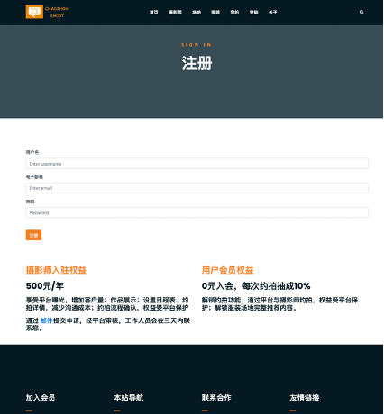
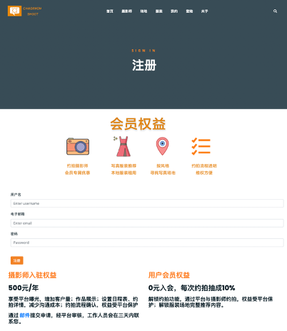
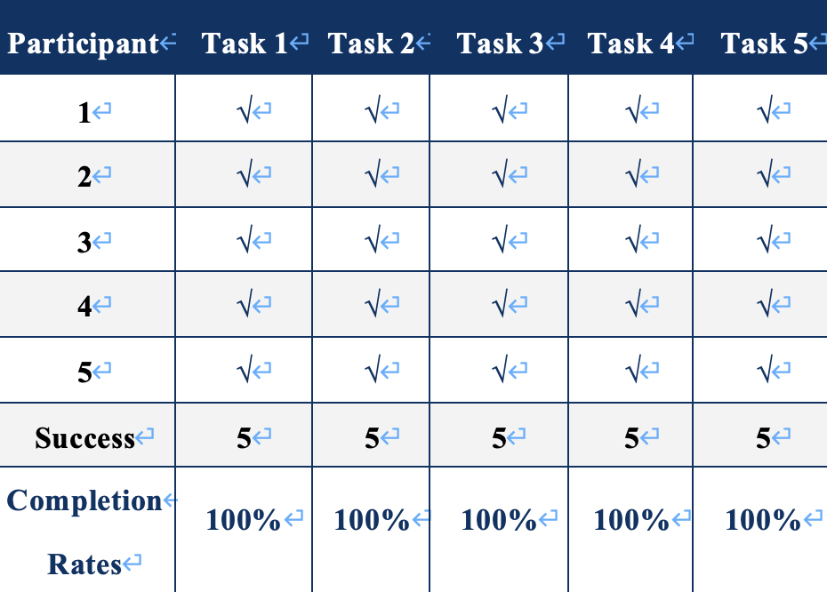
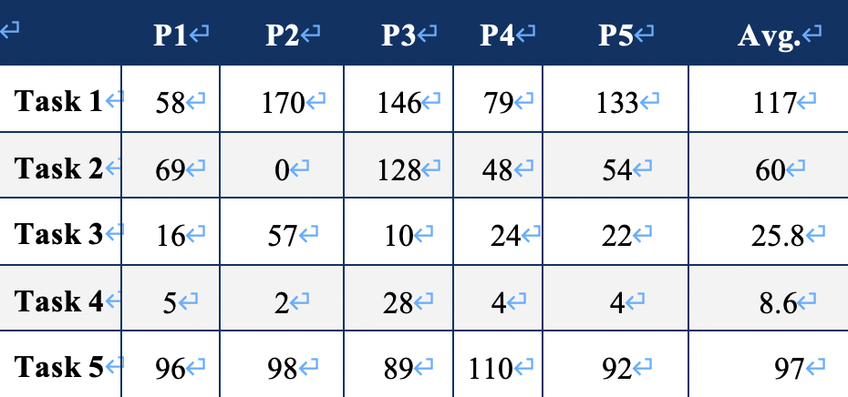
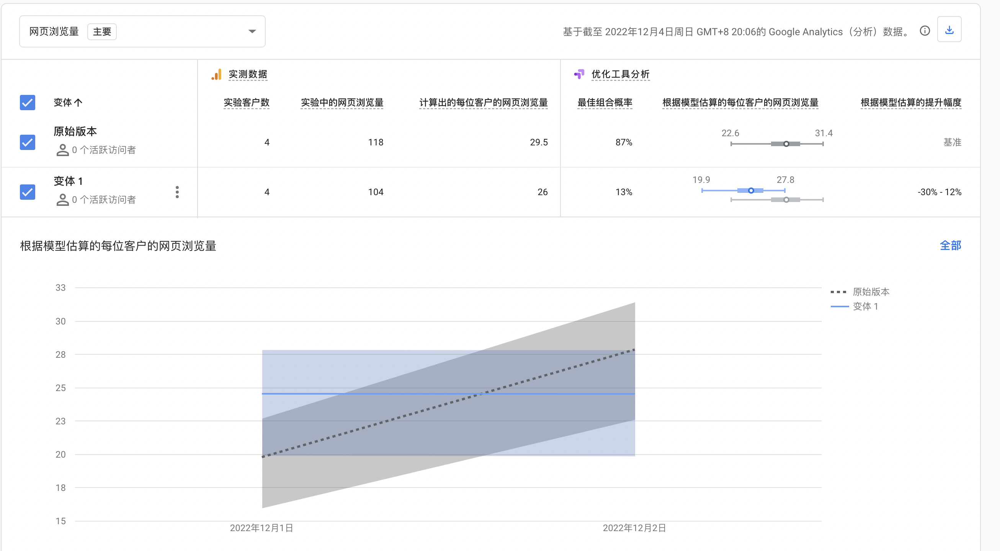
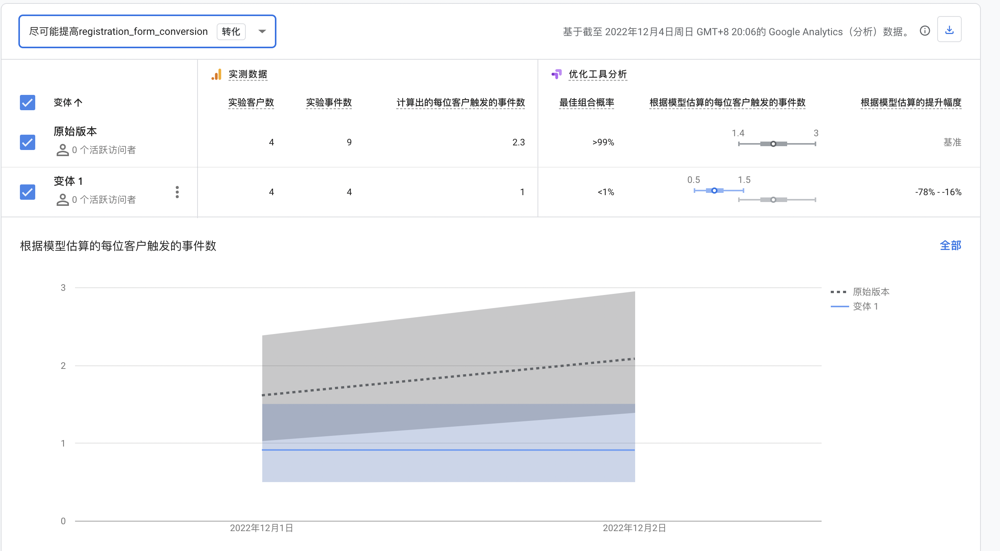

First Page
Test my website
The solution was to develop a commercial platform to connect people looking for photographers with photographers looking to increase exposure and clientele and reduce the time and effort spent in finding photographers, venues, and clothing, as well as provide more clients for lesser known photographers.
I conducted usability test as well as an ab test to verify if the platform could attract users to join the membership and what features were important. The usability test identified the target as four appointees and one photographer to see what problems users actually encountered and what features they would like to access; the ab test was used to confirm that people were actually joining the membership.
I designed five usability tasks to test the platform's shooting appointment features:
1. How to find favorite photographer and examine if the photographer is suitable?
2. Register and log in
3. Make an appointment with photographer.
4. How to view the process?
5. How to find suitable locations and clothes?
In addition, there were three post-test questions:
1. Please rate the overall process: 5 as very satisfied, 1 as very dissatisfied
2. What difficulties did you encounter in the process?
3. How do you think the website can be improved?
AB test：
According to the user usability test, I found that the indication of membership rights and benefits may not be obvious enough. Some users also suggested that they would like the membership benefits to be displayed in a more visible form. In general, simple images attract more attention than complex text, and users are used to navigating from top to bottom, so displaying membership benefits above the registration form will affect users' attention. In the AB test, I will change the position of the membership benefits to see if the prominence of the benefits affects the user's chance of signing up.
Originally, membership benefits were designed to be displayed as text at the bottom of the registration form. In variant 1 of the AB test, I chose to change the membership benefits to be displayed as an image above the registration form.

Result
The results of the usability test are as follows.
All participants completed all tasks.


Most of the time was spent waiting for the page to load, probably because of the image size. The test showed that t4 was the easiest, except for p3, which consumed some time in "My" because I didn't pay attention to the hints and didn't know where the appointment process was, but all other users finished very quickly. The registration button needs to hover over the login, which consumes a certain amount of time, but even if the user does not find the registration button in the navigation, they can still enter through the end of the page. I will consider separating the registration button in subsequent improvements. For the photographer's homepage, users mainly viewed the must-see appointment, schedule, and consultation; users browsed both location page and clothes page, and then viewed the detail page. they mainly focused on pictures, location and cost on detail page. The average score of the whole process was 4.16. Respondents basically thought the website was helpful and targeted to solve the trouble of having to switch between different platforms to ask a photographer to take pictures. They prefer the information on the photographer's page such as photo instructions and schedule, and think they can save a lot of time.
Users suggested that
1. make the “注册“ more obvious
2. Add an appointment confirmation page to remind users to check the clothing and location.
3. Make membership rights more visible.
4. Choose portrait photo samples for “场地”details to provide more practical information.
Photographer suggested that
1. Photographers can pay an additional fee to be displayed in a higher ranking on the platform.
The result of AB Test:
I have not yet obtained complete results. From the small number of existing users, the original version works better and does not match my predictions. But it may be influenced by the registration task of usability test; or it may be a bias from too few users. I will continue to collect data to confirm which one to choose for the final version.
